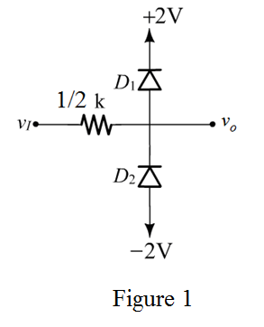
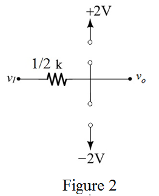
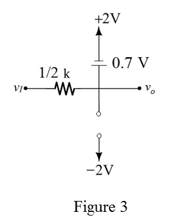
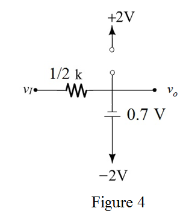
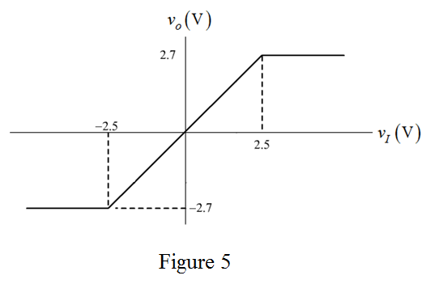

Refer to Figure P4.85 (a) and Figure P4.85 (d) in the text book.
When the two input and output terminals are tied together, the two resistors become parallel.
resistors become parallel.
Determine the equivalent resistance.
Refer to Figure P4.85 (a) and Figure P4.85 (d) in the text book.
When the two input and output terminals are tied together, the two resistors become parallel.
Determine the equivalent resistance.
Draw the circuit diagram as shown in Figure 1.

Consider the input voltage between. In this condition, the diodes are OFF.
Draw the following circuit diagram when the diodes  are OFF.
are OFF.

From Figure 2, it is clear that the input voltage is equal to the output voltage.
Consider the input voltage, . In this condition, the diode  is ON and
is ON and  is OFF.
is OFF.
Draw the following circuit diagram when the diode  is ON and
is ON and  is OFF.
is OFF.

 using Figure 3.
using Figure 3. Apply Kirchhoff’s voltage law to the circuit.
Consider the input voltage, . In this case the diode  is OFF and
is OFF and  is ON.
is ON.
Draw the following circuit diagram when the diode  is OFF and is ON.
is OFF and is ON.

Calculate the output voltage from Figure 4.
Apply Kirchhoff’s voltage law to the circuit.
Draw the transfer characteristics between as shown in Figure 5.

Thus, the transfer characteristic is drawn.